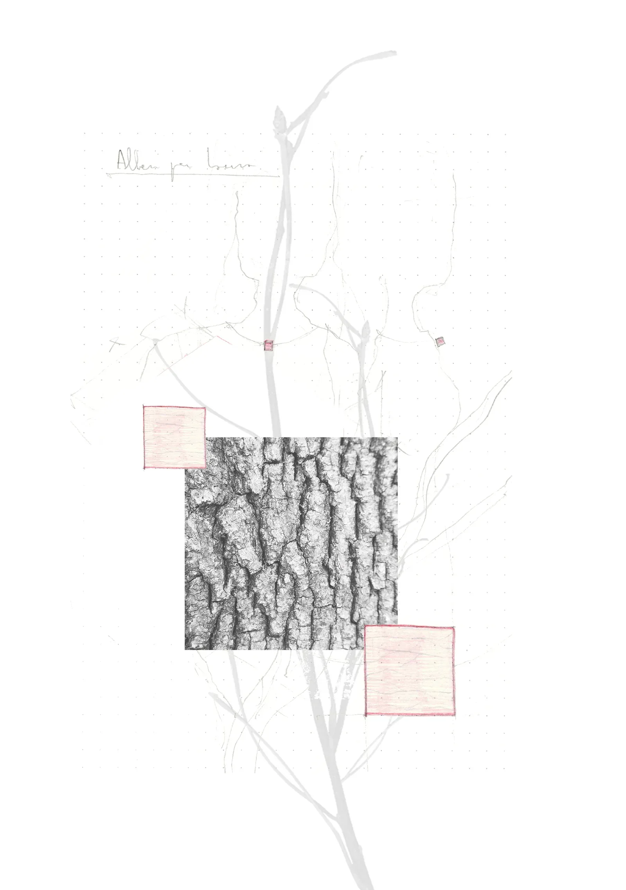

1 / 34
AnitaBar and restaurant
Corso Canalgrande, Modena, Italy
2025
Architectural research and design, from construction detail to urban scale. Drawing, virtual reality, co-design and compositional research shape a method grounded in listening and clarity.
Each project sets out to meet the challenges of contemporary space with effectiveness and innovation. After working in Mantua, Berlin and Rome, the studio is now based in Modena, Italy, designing and renovating apartments and commercial spaces.
The studio's work starts from close attention to context, to the quality of space and to the client's needs. A specialisation in design for historic sites and UNESCO settings allows every project to be approached with sensitivity and deep respect for what already exists.
Samuele SilvestriArchitect
Via Asiago 58, 41125 Modena
info@samuelesilvestriarchitetto.com
+39 366 493 8286
Instagram Order of Architects of Modena, no. 1437 – section A
VAT no. IT04180440366 Privacy (in Italian)


